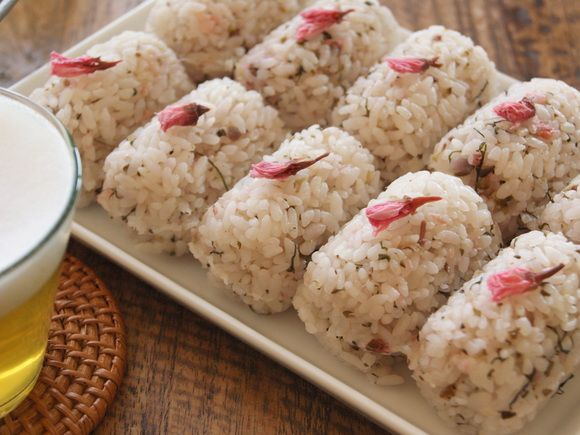

Do you offer dine-in and takeaway?
Yes, we offer both, plus outdoor seating in the garden.
Fresh, seasonal dishes inspired by spring. Order online and enjoy a quiet table, or take it home.
Order Now
Loading dishes...
Yes, we offer both, plus outdoor seating in the garden.
Most categories include vegetarian dishes, clearly labelled on the menu.
Most orders are ready in 20 to 30 minutes.